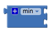
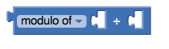
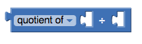

Math Blocks
**Note: any Math blocks that have unplugged sockets will read the unplugged spot as a 0.
- 0 (basic number block)
- =
- ≠,
- >,
- ≥,
- <,
- ≤,
- +
- -
- *
- /
- ^
- random integer
- random fraction
- random set seed to
- min
- max
- sqrt
- abs
- -
- log
- e^
- round
- ceiling
- floor
- modulo
- remainder
- quotient
- sin
- cos
- tan
- asin
- acos
- atan
- atan2
- convert radians to degrees
- convert degrees to radians
- format as a decimal
- is a number
Can't find the math block you're looking for in the built-in blocks?
Some math blocks are dropdowns which means that they can be converted into different blocks. Here's a list of what is included in each dropdown:
=, ≠, >, ≥, <, ≤

min, max

sqrt, abs, -, log, e^, round, ceiling, floor

modulo of, remainder of, quotient if

sin, cos, tan, asin, acos, atan

convert radians to degrees, convert degrees to radians

Basic Number Block

Can be used as any positive or negative number (decimals included). Double clicking on the "0" in the block will allow you to change the number.
=

Tests whether two numbers are equal and returns true or false.
=

Tests whether two numbers are not equal and returns true or false.
>,

Tests whether the first number is greater than the second number and returns true or false.
≥,

Tests whether the first number is greater than or equal to the second number and returns true or false.
<,

Tests whether the first number is less than the second number and returns true or false.
≤,

Tests whether the first number is less than or equal to the second number and returns true or false.
+
Returns the result of adding any amount of blocks that have a number value together. Blocks with a number value include the basic number block, length of list or text, variables with a number value, etc. This block is a mutator and can be expanded to allow more numbers in the sum.

-

Returns the result of subtracting the second number from the first.
*
Returns the result of multiplying any amount of blocks that have a number value together. It is a mutator block and can be expanded to allow more numbers in the product.

/

Returns the result of dividing the first number by the second.
^

Returns the result of the first number raised to the power of the second.
random integer

Returns a random integer value between the given values, inclusive. The order of the arguments doesn't matter.
random fraction

Returns a random value between 0 and 1.
random set seed to

Use this block to generate repeatable sequences of random numbers. You can generate the same sequence of random numbers by first calling random set seed with the same value. This is useful for testing programs that involve random values.
min

Returns the smallest value of a set of numbers. If there are unplugged sockets in the block, min will also consider 0 in its set of numbers. This block is a mutator and a dropdown.
max

Returns the largest value of a set of numbers. If there are unplugged sockets in the block, max will also consider 0 in its set of numbers. This block is a mutator and a dropdown.
sqrt

Returns the square root of the given number.
abs

Returns the absolute value of the given number.
-

Returns the negative of a given number.
log

Returns the natural logarithm of a given number.
e^

Returns e (2.71828...) raised to the power of the given number.
round

Returns the given number rounded to the closest integer. If the fractional part is < .5 it will be rounded down. Otherwise if it is ≥ .5 it will be rounded up.
ceiling

Returns the smallest integer that's greater than or equal to the given number.
floor

Returns the greatest integer that's less than or equal to the given number.
modulo

Modulo(a,b) is the same as remainder(a,b) when a and b are positive. More generally, modulo(a,b) is defined for any a and b so that (floor(a/b)× b) + modulo(a,b) = a. For example, modulo(11, 5) = 1, modulo(-11, 5) = 4, modulo(11, -5) = -4, modulo(-11, -5) = -1. Modulo(a,b) always has the same sign as b, while remainder(a,b) always has the same sign as a.
remainder
Remainder(a,b) returns the result of dividing a by b and taking the remainder. The remainder is the fractional part of the result multiplied by b.
For example, remainder(11,5) = 1 because
11 / 5 = 2 1⁄5
In this case, 1⁄5 is the fractional part. We multiply this by b, in this case 5 and we get 1, our remainder.
Other examples are remainder(-11, 5) = -1, remainder(11, -5) = 1, and remainder(-11, -5) = -1.
quotient

Returns the result of dividing the first number by the second and discarding any fractional part of the result.
sin

Returns the sine of the given number in degrees.
cos

Returns the cosine of the given number in degrees.
tan

Returns the tangent of the given number in degrees.
asin

Returns the arcsine of the given number in degrees.
acos

Returns the arccosine of the given number in degrees.
atan

Returns the arctangent of the given number in degrees.
atan2

Returns the arctangent of y/x, given y and x.
convert radians to degrees

Returns the value in degrees of the given number in radians.
convert degrees to radians

Returns the value in radians of the given number in degrees.
format as decimal

Formats a number as a decimal with a given number of places after the decimal point. The number of places must be a non-negative integer. The result is produced by rounding the number (if there were too many places) or by adding zeros on the right (if there were too few).
is a number

Returns true if the given object is a number, and false otherwise.